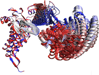
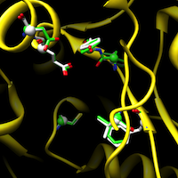
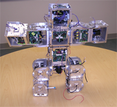
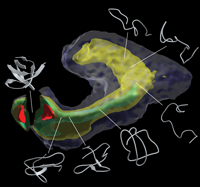
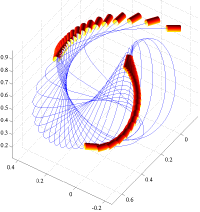
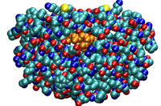
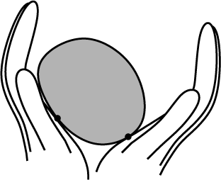
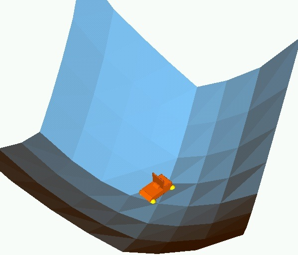
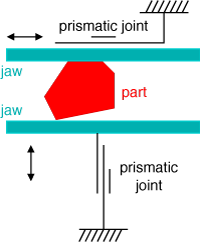

Many large protein complexes undergo extensive conformational changes as part of their functionality. Tracing these changes is important for understanding the way these proteins function. We have developed a novel computational methodology to efficiently trace the conformational changes in biological macromolecules. The methodology borrows from robot motion planning techniques. A key component of the approach is the parametrization of the degrees of freedom in such a way that energetically favorable conformational changes are favored by the motion planning-inspired conformational sampling algorithm.

Broad and extensive knowledge of the biological function of proteins would have immense practical impact on the identification of novel drug targets, the reduction of potential side effects, and on finding the molecular causes of disease. Unfortunately, the experimental determination of protein function is an expensive and time consuming process. In an effort to accelerate and guide the experimental process, computational techniques have been developed to annotate functional information about well-studied proteins onto predictably similar but less-studied proteins.
We are currently investigating the extent that patterns in the structure and physicochemical properties of small sets of residues can be used to predict function. Specifically, we have developed algorithms for the following problems:
The prediction of function as characterized by Enzyme Commission classification or Gene Ontology molecular function classification. Given a small spatial arrangement of residues characteristic of some function (a motif), we are able to quickly identify with high sensitivity and specificity all proteins in the entire Protein Data Bank with that function.
The identification of small variations within the structures available for a protein family. These variations are often correlated with phylogeny or binding mode. Such variations can be exploited to further improve the predictions in the previous problem.
The prediction of inhibitor affinity for the entire human kinome. Kinases are all very similar to each other and are involved in many different biological processes. Being able to predict affinity of putative inhibitors is useful in computational drug design. Here, we do not assume a motif is known. Instead, we exhaustively explore all combinations of binding site residues whose structure and physicochemical properties are predictive of binding some inhibitor. There is not just one motif; the specificity-determining residues are inhibitor dependent.

Over the years many different robots have been developed for specific tasks. Self-reconfigurable robots are the only truly general purpose robots. For a given task, they can re-arrange themselves to perform that task. For instance, a number of modules can form an arm to help astronauts perform tasks during space walks, they can be reconfigured into planetary rover, form a network of communication beacons, and collect samples. The Polymorphic Robotics Laboratory is working on the next generation of self-reconfigurable robots called SuperBot. This system is currently being built. I was in charge of the software development, both on the modules and the simulator code.
I also worked on computing mass properties of an ensemble of modules in a distributed fashion. The next step is to control these mass properties and synthesize local behaviors that give rise to stable locomotion on uneven terrain.

The definition of reaction coordinates for the characterization of a protein folding reaction has long been a controversial issue, even for the “simple” case where one single free energy barrier separates the folded and unfolded ensemble. Together with Lydia Kavraki’s group and Cecilia Clementi’s group we have developed a general approach to this problem to obtain a few collective coordinates by using nonlinear dimensionality reduction. We validated the usefulness of this method by characterizing the folding landscape associated with a coarse-grained protein model of src homology 3 as sampled by molecular dynamics simulations. The folding free-energy landscape projected on the few relevant coordinates emerging from the dimensionality reduction can correctly identify the transition-state ensemble of the reaction. The first embedding dimension efficiently captures the evolution of the folding process along the main folding route. These results clearly show that the proposed method can efficiently find a low-dimensional representation of a complex process such as protein folding.
Although the work so far has focused on protein folding, the isomap-based method we have developed is applicable to other domains with large high-dimensional data sets. Especially if the data is non-uniformly sampled, our approach can offer a significant speed-up over plain landmark isomap.

We have been working on path planning for deformable linear objects such as sutures. The main difficulty in finding a solution for this problem is that the configuration space of a deformable linear object is infinite-dimensional. A subset of these configurations consists of stable poses, or equilibrium configurations. A pose is stable if for given endpoint constraints the potential energy of the wire is at a minimum.
We came up with an adaptive algorithm based on subdivision that efficiently represents equilibrium configurations of deformable linear objects. Our path planner uses this algorithm to find paths from one stable configuration to another, such that all intermediate configurations are also stable. An example path is shown on the right. The little cylinders denote the positions and tangents of the endpoints, which are constrained by manipulators. This path planner can be used as a local in a sampling-based planner to build up a roadmap of “shape space.”

The study of molecular interactions is a central issue in biochemistry. The recognition between a ligand and its receptor plays a determinant role in virtually all biological processes. The goal in molecular docking is to quickly determine how well two molecules fit together. One of them (called the receptor) is a large protein whose function is influenced by the second molecule (called the ligand). This problem is central to computational drug design. Due to the formidable combinatorial complexity of modeling the interaction between a flexible protein and a flexible ligand, most current docking methods limit their search by approximating the receptor as a rigid structure. This approximation limits their applicability since it does not allow the receptor to adapt to the ligand in an induced fit model. In Lydia Kavraki’s group I have worked on modeling the flexibility of the receptor. Using approximations of the underlying degrees of freedom we can efficiently explore the low-energy parts of the configuration space of large flexible receptors.

Michael Erdmann and I have developed a method to reconstruct the shape of an unknown object using tactile sensors without requiring object immobilization. Instead, the robot manipulates the object without prehension. The robot infers the shape, motion and center of mass of the object based on the motion of the contact points as measured by tactile sensors. This allows for a natural, continuous interaction between manipulation and sensing. Eventually, it will make robots more capable in the physical world by enabling them to pick up unknown objects.
We have analyzed several different cases of the tactile shape reconstruction problem. First, we considered planar shapes with quasistatic dynamics. Simulations and experiments have validated the analytic results. Next, we extended the analysis to the full dynamics and prove observability of the nonlinear system describing the shape and motion of the object being manipulated. In our simulations, a simple observer based on Newton’s method for root finding can recover unknown shapes with almost negligible errors. Using the same framework we can also describe the shape and dynamics of three-dimensional objects. However, there are some fundamental differences between the planar and three-dimensional case, due to increased tangent dimensionality. Also, perfect global shape reconstruction is impossible in the 3D case, but it is almost trivial to obtain upper and lower bounds on the shape. The 3D shape reconstruction method has also been implemented and we present some simulation results.

In parts orienting the goal is to bring a known part in an unknown orientation to a known orientation. Often this is done without any sensing. I have worked on this problem at the macro-level and the micro-level. At the macro-level, I have developed strategies to orient three-dimensional parts with minimal sensing and manipulation. That is, we would like to bring a part from an unknown position and orientation to a known orientation (but possibly unknown position) with minimal means. In general, it is not possible to orient a part completely without sensors, but it is sufficient if a particular orienting strategy can bring a part into one particular orientation with high probability. The sensing is then reduced to a binary decision: a sensor only has to detect whether the part is in the right orientation or not. If not, the part is fed back to the parts orienting device. Assuming the orienting strategy succeeds with high probability, on average it takes just a few tries to orient the part. An alternative view of this type of manipulation is to consider it as manipulation of the pose distribution. The goal then is to find the pose distribution with minimal entropy, thereby maximally reducing uncertainty.

During the Summer of 2001 I worked with Ken Goldberg at UC Berkeley on orienting parts at the micrometer scale. As microelectromechanical systems (MEMS) become ubiquitous, the need to orient micro-scale parts becomes more important. At this scale sticking effects complicate hand-off motions and the degrees of freedom of micro-manipulators are limited. We found that polygonal parts can be oriented with a parallel jaw gripper using two simple primitives: squeezing and rolling the part between the jaws. The gripper does not need to be reoriented and no sensing is required. I developed an algorithm that finds a plan of length O(n) in O(n) time for orienting a polygonal micro-scale part with n vertices. To the best of my knowledge this is the first algorithmic approach to micromanipulation.
